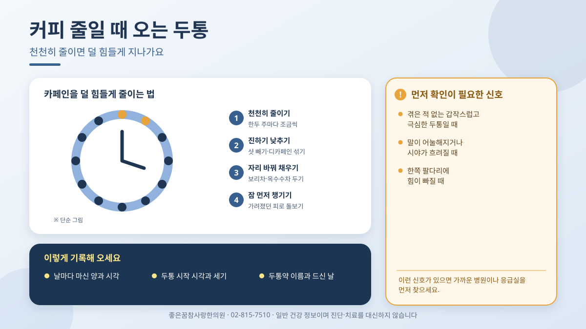

이종호 한의사 감수좋은꿈참사랑한의원 대표원장 (한의사 면허번호 19769)발행 2026-11-26 · 수정 2026-11-26
이 글의 차례
새해 다짐으로 커피를 끊기로 했습니다. 첫날 아침은 그럭저럭 버텼는데, 오후가 되자 머리가 지끈지끈하고 눈꺼풀이 천근만근입니다. 둘째 날에는 머리 전체가 조여 오고 사소한 일에도 짜증이 납니다. 결국 편의점에서 커피 한 잔을 사 마시고 나니 거짓말처럼 두통이 풀립니다.
이런 경험을 하신 분이 생각보다 많습니다. 커피를 줄이거나 끊으려다 두통 때문에 포기하신 분, 주말에 늦잠을 자고 일어나면 머리가 아픈 분, 건강검진 전날 금식하고 나서 두통을 겪으신 분도 같은 흐름 안에 있을 수 있습니다.
이것을 카페인 금단 두통이라고 부릅니다. 매일 카페인을 드시던 몸이 갑자기 카페인이 줄어든 상태에 적응하는 동안 생기는 두통입니다. 의지가 약해서 생기는 것이 아니라, 몸이 익숙해진 흐름이 바뀔 때 생기는 자연스러운 반응에 가깝습니다.
반가운 소식은 이 두통이 대개 며칠에서 열흘 사이에 잦아든다는 점, 그리고 줄이는 방법을 조금만 바꾸면 훨씬 덜 힘들게 지나갈 수 있다는 점입니다. 커피를 사랑하는 분이라면 완전히 끊지 않고 내게 맞는 양을 찾는 것도 좋은 목표가 될 수 있습니다. 이 글에서는 그 방법을 차근차근 정리했습니다.
카페인 금단 두통은 어떤 모양인가요
카페인 금단 두통은 마지막으로 카페인을 드신 뒤 대략 12시간에서 하루 사이에 시작되는 경우가 많습니다. 이틀째쯤 가장 심해지고, 그 뒤로 조금씩 잦아들어 대개 며칠에서 열흘 안쪽으로 가라앉습니다.
두통은 머리 전체가 묵직하거나 조이는 느낌, 이마와 관자놀이가 지끈거리는 느낌으로 오는 경우가 많습니다. 움직이면 조금 더 아프고, 커피를 마시면 빠르게 풀리는 것이 특징입니다. 원래 편두통이 있는 분은 금단이 편두통을 부르기도 합니다.
두통과 함께 졸림, 무기력, 집중이 잘 안 되는 느낌, 짜증, 우울한 기분, 가벼운 메스꺼움, 근육이 뻐근한 느낌이 따라오기도 합니다. 감기 기운처럼 몸이 무겁다고 말씀하시는 분도 있습니다.
왜 커피를 끊으면 머리가 아플까요
카페인은 뇌에서 '피곤하다, 쉬어라'라는 신호를 내는 물질이 자리 잡는 곳을 대신 차지해 잠시 막아 둡니다. 그래서 커피를 마시면 정신이 맑아지고 피로가 덜 느껴집니다. 그런데 매일 카페인을 드시면 몸은 이 상태에 맞춰 그 신호를 받는 자리를 더 늘려 놓습니다.
이 상태에서 카페인이 갑자기 사라지면 늘어난 자리에 피로 신호가 한꺼번에 몰려듭니다. 그래서 평소보다 훨씬 졸리고 무기력해집니다. 또 카페인은 머리의 혈관을 살짝 조여 주는 작용도 하는데, 카페인이 빠지면 혈관이 넓어지면서 두통이 생기는 것으로 설명됩니다.
몸이 카페인 없는 상태에 다시 맞춰 자리를 줄여 가는 데 며칠이 걸리고, 그 기간 동안 두통과 졸림이 이어집니다. 하루에 드시던 양이 많을수록, 갑자기 끊을수록 이 적응 기간이 힘들게 느껴지는 경향이 있습니다.
주말 두통, 금식 두통도 같은 흐름일 수 있습니다
평일에는 괜찮은데 주말 아침마다 머리가 아픈 분이 계십니다. 평일에는 출근하자마자 커피를 마시는데, 주말에는 늦잠을 자느라 평소 커피 시간이 한참 지나서야 첫 잔을 마시게 되는 경우입니다. 이 사이에 가벼운 금단이 오는 것입니다.
건강검진이나 시술을 앞두고 금식한 날, 장염으로 며칠 아무것도 못 드신 날, 여행지에서 커피를 마시지 못한 날의 두통도 같은 흐름일 수 있습니다. 두통이 오는 날을 커피 시간과 나란히 놓고 보면 연결이 보이는 경우가 많습니다.
이런 분들은 주말에도 평일과 비슷한 시각에 일어나 첫 잔을 드시거나, 평일 커피 양을 조금 줄여 몸이 카페인에 덜 기대게 만드는 쪽을 생각해 볼 수 있습니다.
다른 두통과는 어떻게 구분하나요
커피를 줄인 시기와 두통이 시작된 시기가 맞아떨어지고, 커피를 마시면 빠르게 풀린다면 금단 두통일 가능성이 큽니다. 하지만 커피를 줄였다는 이유만으로 모든 두통을 금단으로 넘기는 것은 조심스럽습니다.
열흘이 넘도록 두통이 계속되거나, 오히려 점점 심해진다면 다른 원인을 함께 살펴봐야 합니다. 원래 있던 긴장성 두통이나 편두통이 드러난 것일 수도 있고, 커피로 가려져 있던 잠 부족과 피로가 두통으로 나타나는 것일 수도 있습니다.
두통약에도 카페인이 들어 있는 경우가 있습니다. 커피는 줄였는데 카페인이 든 두통약을 자주 드시면, 금단과 약물과용 두통이 엉켜 두통이 쉽게 끝나지 않을 수 있습니다. 드시는 두통약의 성분을 약사에게 확인해 보세요.
덜 힘들게 줄이는 방법
카페인을 줄이는 가장 덜 힘든 방법은 갑자기 끊지 않고 천천히 줄이는 것입니다. 하루 세 잔을 드셨다면 일주일 동안 두 잔 반, 그다음 주 두 잔처럼 한두 주마다 조금씩 줄여 가는 식입니다. 이렇게 하면 금단 두통이 거의 없거나 가볍게 지나가는 분이 많습니다.
잔 수를 줄이기 어렵다면 한 잔의 진하기를 줄이는 방법도 있습니다. 샷을 하나 빼거나, 디카페인 원두를 반쯤 섞거나, 작은 컵으로 바꾸는 것입니다. 마시는 습관과 맛은 그대로 두고 카페인만 조금씩 줄일 수 있어 마음의 부담이 덜합니다.
줄이는 시기는 바쁜 주보다는 비교적 여유 있는 주를 고르시는 것이 좋습니다. 중요한 시험이나 발표, 장거리 운전이 있는 주에는 무리하게 시작하지 마시고, 일정이 지나간 뒤에 시작하셔도 늦지 않습니다.
커피 대신 무엇을 마실까요
커피를 마시는 시간은 단지 카페인을 드시는 시간만이 아닙니다. 잠깐 쉬어 가는 시간, 따뜻한 것을 손에 쥐는 시간, 동료와 이야기하는 시간이기도 합니다. 그래서 커피를 줄일 때는 그 시간을 다른 것으로 채워 주시는 것이 도움이 됩니다.
보리차, 옥수수차, 현미차처럼 카페인이 없는 따뜻한 차를 커피 자리에 두어 보세요. 녹차나 홍차에도 카페인이 들어 있으니, 줄이는 기간에는 성분을 확인하고 고르시는 것이 좋습니다. 에너지 음료와 콜라, 초콜릿에도 카페인이 있다는 것을 함께 기억해 주세요.
오후에 졸음이 몰려오는 시간에는 커피 대신 밖에 나가 5분이라도 햇볕을 쬐며 걸어 보세요. 물 한 잔을 천천히 마시고 창문을 열어 바람을 쐬는 것만으로도 잠이 조금 깨는 분이 많습니다. 자리에서 일어나 기지개를 켜고 어깨를 크게 돌려 주는 것도 좋습니다.
커피가 가리고 있던 피로를 마주할 때
커피를 줄이고 나서 '내가 이렇게 피곤한 사람이었나' 하고 놀라시는 분이 많습니다. 그동안 커피가 잠 부족과 피로를 가려 주고 있었던 것입니다. 금단 기간이 지나도 피로가 계속된다면 그것은 카페인이 아니라 원래의 피로일 가능성이 큽니다.
그래서 커피를 줄이는 것은 잠을 돌아보는 좋은 기회가 됩니다. 잠드는 시각을 조금 앞당기고, 잠들기 전 화면을 멀리하고, 주말에도 일어나는 시각을 크게 바꾸지 않는 것만으로도 낮의 피로가 한결 덜해질 수 있습니다.
카페인이 줄어들면 밤잠이 깊어지는 경험을 하시는 분도 많습니다. 처음 며칠의 두통과 졸림을 넘기고 나면, 오히려 아침이 개운해졌다고 말씀하시는 분들이 있습니다. 그 변화를 느끼는 것이 다음 걸음을 이어 가는 힘이 됩니다.
두통이 온 날 집에서 해 볼 것
금단 두통이 시작되면 먼저 물을 한 잔 천천히 드시고, 가능하면 잠시 눈을 감고 쉬어 보세요. 금단 기간에는 몸이 평소보다 쉬고 싶어 하는 상태라, 짧은 휴식만으로도 두통이 조금 누그러지는 분이 많습니다.
뒷목과 어깨가 뻐근하다면 따뜻한 수건을 목덜미에 올려 두거나 따뜻한 물로 샤워를 해 보세요. 관자놀이가 욱신거린다면 시원한 수건을 이마에 대는 쪽이 편할 수 있습니다. 가볍게 산책하며 바깥 공기를 쐬는 것도 도움이 됩니다.
진통제를 드셔야 할 만큼 아프다면 약 이름과 드신 날을 적어 두세요. 금단 기간이 지나도 약을 드시는 날이 이어진다면 그 흐름을 진료실에서 함께 살펴봅니다.
줄이는 목표는 사람마다 다릅니다
커피를 완전히 끊어야 하는 것은 아닙니다. 하루 한두 잔을 아침에만 즐기며 잠과 컨디션이 편하다면 그것으로도 충분할 수 있습니다. 중요한 것은 카페인이 내 잠과 두통, 속, 두근거림에 어떤 영향을 주는지 알고 내 몸에 맞는 양을 찾는 것입니다.
잠이 얕거나 두근거림이 잦은 분, 속 쓰림이 있는 분은 양을 조금 더 줄이거나 오후 커피를 먼저 쉬어 보시길 권합니다. 반대로 커피를 줄였을 때 별다른 차이를 느끼지 못한다면 무리하게 끊으실 필요는 없습니다.
목표를 정할 때는 '오늘부터 끊는다'보다 '한 달 뒤 하루 한 잔'처럼 기간과 양을 함께 정해 두시면 덜 지칩니다. 중간에 한두 번 많이 마신 날이 있어도 다음 날 다시 계획대로 돌아오면 됩니다.
카페인이 많은 생활이 남기는 다른 흔적
카페인을 많이 드시는 분들께 여쭈면 두통 말고도 다른 불편을 함께 말씀하시는 경우가 많습니다. 가슴이 두근거리고, 손이 살짝 떨리고, 속이 쓰리고, 소변이 잦고, 밤에 잠들기 어렵다는 것입니다. 이런 불편이 카페인을 줄이면서 함께 가벼워지는 분들이 있습니다.
반대로 이런 불편이 카페인을 줄인 뒤에도 그대로라면 다른 원인을 함께 살펴봐야 합니다. 두근거림이 잦다면 내과에서 심장 리듬과 갑상선을, 속 쓰림이 오래간다면 소화기 진료를 받아 보시길 권합니다.
먼저 이렇게 여쭙니다
- 하루에 커피, 차, 에너지 음료를 얼마나, 몇 시에 드시나요?
- 언제부터, 어떤 방식으로 줄이셨나요?
- 두통은 언제 시작되었고, 어떤 모양으로 이어지나요?
- 커피를 마시면 두통이 풀리나요?
- 원래 편두통이나 긴장성 두통이 있으셨나요?
- 두통약은 무엇을, 한 달에 며칠 드시나요?
- 잠든 시각과 깬 시각, 낮의 피로는 어떠신가요?
일상에서 먼저 해 볼 수 있는 것
- 한꺼번에 끊지 말고 한두 주마다 조금씩 줄이기
- 샷 줄이기, 디카페인 섞기, 작은 컵으로 바꾸기
- 커피 자리에 보리차, 옥수수차 같은 카페인 없는 차 두기
- 물을 하루 동안 나눠 자주 마시기
- 끼니를 거르지 않기
- 오후 졸음 시간에 5분 햇볕 아래 걷기
- 잠드는 시각을 조금 앞당기기
두통이 심한 날에는 무리하게 참기보다 하루 이틀 줄이는 속도를 늦추셔도 괜찮습니다. 목표는 며칠 만에 끊는 것이 아니라, 몸이 덜 흔들리면서 원하는 양에 닿는 것입니다.
한의원에서 함께 살필 수 있는 경우
- 커피를 줄이려 할 때마다 두통과 무기력 때문에 다시 돌아가게 되는 경우
- 커피를 줄인 뒤에도 피로와 졸림, 두통이 오래 이어지는 경우
- 카페인을 많이 드시며 두근거림, 속 쓰림, 얕은 잠이 함께 있는 경우
- 목과 어깨가 굳어 있고 두통이 자주 오는 경우
좋은꿈참사랑한의원에서는 먼저 카페인을 드시는 흐름과 두통의 모양을 함께 정리하고, 맥을 짚어 몸 전체의 상태를 살핍니다. 그다음 침, 온열 관리, 한약 상담 가운데 지금 상태에 맞는 것을 진찰 뒤에 정합니다.
한약을 상의할 때는 드시는 약을 모두 확인하고 신중하게 정합니다. 두통약이나 다른 약을 처방받아 드신다면 처방한 선생님과 상의 없이 멈추지 않으셔야 합니다. 임신을 준비하거나 임신 중이시라면 먼저 알려 주시고, 카페인 양은 산부인과와도 상의해 주세요.
이렇게 기록해 오시면 상담이 쉬워집니다
- 날마다 드신 커피, 차, 에너지 음료의 양과 시각
- 두통이 시작된 시각과 세기(0~10)
- 함께 온 졸림, 짜증, 메스꺼움
- 잠든 시각과 깬 시각
- 두통약을 드신 날과 약 이름
기록을 보면 커피를 줄인 날과 두통이 온 날의 간격, 줄이는 속도가 내 몸에 맞는지가 보입니다. 그 흐름을 함께 보며 다음 주의 양을 정하시면 됩니다.
이런 증상은 먼저 확인이 필요합니다
- 지금까지 겪은 적 없는 갑작스럽고 극심한 두통이 오는 경우
- 두통과 함께 말이 어눌해지거나 한쪽 팔다리에 힘이 빠지고 시야가 흐려지는 경우
이런 신호가 있으면 한의원보다 가까운 병원이나 응급실을 먼저 찾으세요.
함께 읽으면 좋은 글
- 마감을 앞둔 개발자·디자이너가 커피에 기대며 밤을 새울 때 잠은 어떻게 정리하나요?
- 커피와 에너지 음료로 버티다 밤에 잠이 안 올 때는 어떻게 하나요?
- 두통약을 자주 먹을수록 두통이 더 잦아지는 약물과용 두통은 어떻게 살피나요?
- 아침에 눈뜨자마자 머리가 지끈거리는 기상 두통은 무엇 때문이고 어떻게 살피나요?
- 한약을 먹는 동안 커피나 차는 마셔도 되나요?

여쭙는 것
- 하루에 커피, 차, 에너지 음료를 얼마나, 몇 시에 드시나요?
- 언제부터, 어떤 방식으로 줄이셨나요?
- 두통은 언제 시작되었고, 어떤 모양으로 이어지나요?
생활에서 해 볼 것
- 한꺼번에 끊지 말고 한두 주마다 조금씩 줄이기
- 샷 줄이기, 디카페인 섞기, 작은 컵으로 바꾸기
- 커피 자리에 보리차, 옥수수차 같은 카페인 없는 차 두기
한의원에서 함께 살필 것
- 커피를 줄이려 할 때마다 두통과 무기력 때문에 다시 돌아가게 되는 경우
- 커피를 줄인 뒤에도 피로와 졸림, 두통이 오래 이어지는 경우
- 카페인을 많이 드시며 두근거림, 속 쓰림, 얕은 잠이 함께 있는 경우
먼저 확인이 필요한 신호
- 지금까지 겪은 적 없는 갑작스럽고 극심한 두통이 오는 경우
- 두통과 함께 말이 어눌해지거나 한쪽 팔다리에 힘이 빠지고 시야가 흐려지는 경우
한눈에 보는 표
| 구분 | 핵심 |
|---|---|
| 여쭙는 것 | 하루에 커피, 차, 에너지 음료를 얼마나, 몇 시에 드시나요? 언제부터, 어떤 방식으로 줄이셨나요? |
| 생활에서 해 볼 것 | 한꺼번에 끊지 말고 한두 주마다 조금씩 줄이기 샷 줄이기, 디카페인 섞기, 작은 컵으로 바꾸기 |
| 한의원에서 함께 살필 것 | 커피를 줄이려 할 때마다 두통과 무기력 때문에 다시 돌아가게 되는 경우 커피를 줄인 뒤에도 피로와 졸림, 두통이 오래 이어지는 경우 |
| 먼저 확인이 필요한 신호 | 지금까지 겪은 적 없는 갑작스럽고 극심한 두통이 오는 경우 두통과 함께 말이 어눌해지거나 한쪽 팔다리에 힘이 빠지고 시야가 흐려지는 경우 |
자주 묻는 질문
카페인 금단 두통은 얼마나 가나요?
대개 끊은 뒤 하루 안쪽에 시작해 이틀째쯤 가장 심하고, 며칠에서 열흘 안쪽으로 잦아드는 경우가 많습니다. 그보다 길게 이어지거나 점점 심해진다면 다른 원인을 함께 살펴봅니다.
두통이 너무 심하면 커피를 조금 마셔도 되나요?
줄이는 속도가 너무 빨랐다는 신호일 수 있어 조금 마시고 속도를 늦추셔도 괜찮습니다. 목표는 한 번에 끊는 것이 아니라 덜 흔들리며 줄여 가는 것입니다.
디카페인 커피에는 카페인이 전혀 없나요?
디카페인 커피에도 아주 적은 양의 카페인이 남아 있습니다. 일반 커피보다 훨씬 적어 줄이는 과정에서 섞어 쓰기 좋습니다.
한약을 먹는 동안 커피를 마셔도 되나요?
드시는 한약과 몸 상태에 따라 다를 수 있어 진료할 때 커피 습관을 알려 주세요. 함께 상의해 양과 시각을 정합니다.
좋은꿈참사랑한의원은 재진 때 지난번 이야기부터 이어서 여쭙니다. 진료시간과 예약은 오시는 길에서 확인하세요.
어디서 상담받을 수 있나요?
좋은꿈참사랑한의원은 서울 동작구 만양로2길 2 신성빌딩 3층·5층(서울 동작구 상도동, 7호선 상도역 3번 출구 근처)에 있습니다. 한의사 3명(이종호 대표원장, 조영기 수석진료원장, 정원영 진료원장)이 진료합니다. 진료시간은 평일 09:30~20:00(점심 13:00~14:00), 토·일·공휴일 09:30~15:00이며, 방문 전 전화로 확인을 권합니다. 예약은 네이버 예약, 카카오톡 상담, 전화 02-815-7510로 받습니다.
이 글은 일반적인 건강 정보이며 개인의 진단이나 치료를 대신하지 않습니다. 증상이 있거나 복용 중인 약이 있다면 진료를 통해 확인하세요. 치료 효과는 개인마다 다를 수 있습니다.
작성 기준: 일반적으로 알려져 있는 건강 정보를 참고해 정리했습니다(대표원장 감수). 증상 기록은 1~2주 동안 하루 1회, 비슷한 시간에 적어 오시면 지난 상태와 비교하기 쉽습니다.